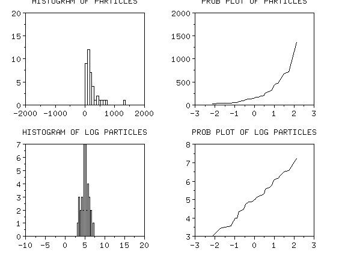

3.
Production
Process Characterization
3.4.
Data Analysis for PPC
3.4.7.
|
Checking Assumptions
|
|
| Check the normality of the data |
Many of the techniques discussed in this chapter,
such as hypothesis tests, control charts and capability indices, assume
that the underlying structure of the data can be adequately modeled by
a normal distribution. Many times we encounter data where this is not
the case.
|
Some causes of non-
normality
|
There are several things that could cause the data
to appear non-normal, such as:
- The data come from two or more different sources. This type of
data will often have a multi-modal distribution. This can be
solved by identifying the reason for the multiple sets of data
and analyzing the data separately.
- The data come from an unstable process. This type of data is
nearly impossible to analyze because the results of the
analysis will have no credibility due to the changing nature
of the process.
- The data were generated by a stable, yet fundamentally
non-normal mechanism. For example, particle counts are
non-normal by the very nature of the particle generation
process. Data of this type can be handled using
transformations.
|
|
We can sometimes transform the data to make it look normal
|
For the last case, we could try transforming the data using
what is known as a power transformation. The power
transformation is given by the equation:
\( Y^{(\lambda)} = \left\{
\begin{array}{ll}
y^{\lambda} & \mbox{if} \hspace{.2in} \lambda \ne 0 \\
\ln(y) & \mbox{if} \hspace{.2in} \lambda = 0
\end{array}
\right.
\)
where Y represents the data and lambda is the transformation
value. Lambda is typically any value between -2 and 2. Some of the more
common values for lambda are 0, 1/2, and -1, which give the
following transformations:
\( \ln(y), \hspace{.2in} \sqrt{y}, \hspace{.2in} \frac{1}{y} \)
|
|
General algorithm for trying to make non-normal data
approximately normal
|
The general algorithm for trying to make non-normal data
appear to be approximately normal is to:
- Determine if the data are non-normal. (Use
normal probability
plot and
histogram).
- Find a transformation that makes the data look approximately
normal, if possible. Some data sets may include zeros (i.e.,
particle data). If the data set does include zeros, you must
first add a constant value to the data and then transform the
results.
|
| Example: particle count data |
As an example, let's look at some particle count data from a
semiconductor processing step. Count data are inherently non-normal.
Below are histograms and normal probability plots for the original data and the
ln, sqrt and inverse of the data. You can see that the log transform does
the best job of making the data appear as if it is normal. All analyses
can be performed on the log-transformed data and the assumptions will
be approximately satisfied.
|
|
The original data is non-normal, the log transform
looks fairly normal
|

|
|
Neither the square root nor the inverse transformation
looks normal
|

|